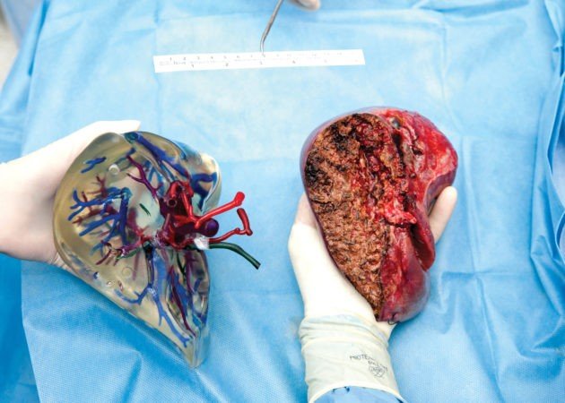
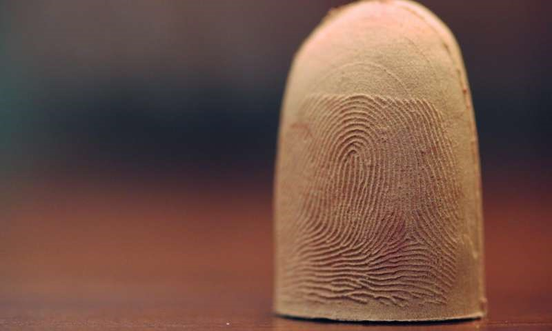

Disadvantages
Limited Materials
The materials used in 3D printing are limited. For instance, the 3D printing material of choice is plastic (73%), as shown in Figure 3. Of the many types of plastics available, polyamide is the most common [10]. Some developers are offering metal as a material, but final parts often are not fully dense. There are several more specialized materials that companies are printing in, such as glass and gold, but such technologies have yet to be commercialized [11].

Questionable Accuracy
3D printing is primarily a prototyping technology, meaning that parts created via the technology are mainly test parts. While 3D printers have made advances in accuracy in recent years, many of the plastic materials still come with an accuracy disclaimer. For instance, many materials print to either +/- 0.1 mm in accuracy, meaning there is room for error [11].
Violation of Copyrights
The biggest disadvantage of 3D printing is counterfeiting. Anyone who gets a hold of a blueprint will be able to counterfeit products easily.
